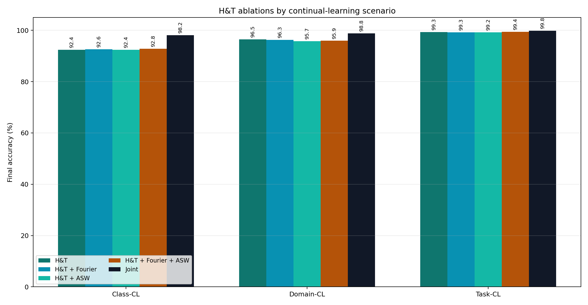

מה מותר להגיד
- הרצנו את הקוד המקורי כדי לוודא שהסביבה והתוצאות קרובות למאמר.
- אחר כך מימשנו בעצמנו את השיטות שבחרנו לפרויקט.
- H&T היא הניסוי שלנו, לא שיטה מהמאמר.
- התוצאות לא חייבות להיות זהות למאמר כי היו פחות seeds וחומרה שונה.
המטרה של הדף הזה היא לעזור לך לענות מהר, ברור ובביטחון: מה הבעיה, מה שחזרנו מהמאמר, מה מימשנו בעצמנו, מה H&T עושה, ומה למדנו מהתוצאות.
בפרויקט חקרנו את בעיית catastrophic forgetting, כלומר מצב שבו מודל לומד מידע חדש ושוכח מידע קודם. השתמשנו ב-Split MNIST ובדקנו שלושה תרחישי continual learning: Class-CL, Domain-CL ו-Task-CL. בשלב הראשון הרצנו את הקוד המקורי של המאמר והשווינו לתוצאות שלו. בשלב השני מימשנו בעצמנו גרסאות של השיטות והשווינו שוב. בשלב השלישי בדקנו שיטה ניסיונית שלנו בשם H&T, שהיא שילוב של replay, distillation ו-feature anchoring.
התוצאה המרכזית: Task-CL היה הכי קל, Class-CL היה הכי קשה, ו-H&T שיפרה מאוד את Class-CL ביחס לשיטות הקלאסיות.
המודל צריך לבחור בין כל 10 הספרות בלי לדעת מאיזו משימה הדוגמה הגיעה. זה התרחיש הכי קשה, כי אין task identity בזמן הערכה.
תשובה קצרה: "Class-CL הכי קשה כי המודל צריך לזהות את כל המחלקות יחד."
אותה בעיית סיווג חוזרת תחת הקשרים או דומיינים שונים. בקוד שלנו הפלט הוא 2, כי בכל context יש הבחנה בינארית מקומית בין שתי ספרות.
תשובה קצרה: "Domain-CL בודק האם המודל שומר ידע כאשר הדומיין משתנה."
בזמן הערכה ידוע איזו משימה נבדקת, ולכן מותר להגביל את המחלקות האפשריות. בגלל זה Task-CL בדרך כלל נותן תוצאות גבוהות יותר.
תשובה קצרה: "Task-CL קל יותר כי יש task identity."
אימון רגיל ברצף. אין מנגנון נגד שכחה, ולכן הוא baseline תחתון.
אימון על כל הדאטה ביחד. זה לא CL אמיתי, אלא upper bound להשוואה.
מעניש שינוי במשקולות שהיו חשובות למשימות קודמות לפי Fisher Information.
שומר את התנהגות המודל הישן בעזרת distillation על logits.
משתמש ב-buffer קטן של דוגמאות עבר ומונע עדכוני gradient שפוגעים בהן.
רשת נפרדת לכל task. מתאים בעיקר ל-Task-CL כי צריך לדעת איזו רשת להפעיל.
H&T היא שיטה היברידית: היא שומרת דוגמאות אמיתיות מהעבר כמו replay, שומרת גם logits כמו LwF, ושומרת feature vector פנימי כדי לייצב את הייצוג של המודל.
הלוס של H&T משלב שלושה כוחות: ללמוד את הדאטה החדש, לזכור את הפלט הישן, ולשמור את הייצוג הפנימי של דוגמאות עבר.
L_total = CE + KD_logits + Feature_anchor + optional_Fourier
Fourier הוא לא המנגנון המרכזי. הוא guardrail נוסף שמנסה לשמור יציבות ספקטרלית של ה-feature vector. כלומר הוא עוזר לייצוב, אבל לא מחליף replay אמיתי.
Adaptive Stability Weighting משנה דינמית את המשקל של KD ושל feature anchoring לפי היחס בין old loss ל-new loss. השתמשנו ב-clamp כדי שלא יקפוץ חזק מדי.
| תרחיש | הכי חשוב לזכור | שיטה חזקה | Joint |
|---|---|---|---|
| Class-CL | הכי קשה; None סביב 19.8%, H&T סביב 92.8% | H&T + Fourier + ASW: 92.84% | 98.15% |
| Domain-CL | H&T חזק מאוד, סביב 96.5% | H&T: 96.51% | 98.79% |
| Task-CL | כולם יחסית גבוהים כי יש task identity | LwF: 99.78%, Separate: 99.74% | 99.81% |
התוצאות מראות שהקושי המרכזי הוא Class-CL, כי שם אין למודל מידע על המשימה בזמן בדיקה. שם השיטות הקלאסיות מתקשות, בעוד ש-H&T מצליחה יותר כי היא משלבת זיכרון אמיתי, שימור פלטים ושימור ייצוגים פנימיים.
code/from_scratch/splitmnist_cl.py
שם יש CLI: בוחרים --method ו---scenario.
code/from_scratch/core.py
שם יש טעינת Split MNIST, בניית contexts, המודל, replay buffer והפונקציה שמעריכה accuracy.
code/from_scratch/methods/
כל שיטה בקובץ משלה: EWC, LwF, A-GEM, Joint, Separate, H&T.
assets/ ו-results_from_scratch/
שם נמצאים ה-CSV, learning curves והגרפים הסופיים.
השתמשנו בקוד המקורי בשלב הראשון רק כדי לשחזר ולוודא שהתוצאות שלנו קרובות למאמר. ההגשה הסופית כוללת מימוש Python שלנו לשיטות המרכזיות, עם קבצים נפרדים לכל שיטה.
במאמר בדרך כלל מריצים כמה seeds וממוצעים. אנחנו הרצנו פחות בגלל זמן וחומרה. בנוסף יש הבדלים קטנים במימוש, בגרסאות ספריות, ובפרוטוקול הערכה. לכן פער מסוים הוא צפוי.
כי בזמן בדיקה המודל לא יודע מאיזה context הדוגמה הגיעה. הוא חייב לבחור בין כל 10 הספרות, ולכן בלבול בין משימות קודמות וחדשות משפיע מאוד.
Joint מתאמן על כל הדאטה הישן והחדש יחד. ב-continual learning אמיתי בדרך כלל אין גישה מלאה לכל הדאטה הישן, ולכן Joint משמש רק כ-upper bound להשוואה.
לא. הגבלנו את ה-buffer ל-100 דוגמאות למחלקה. זה עדיין דורש זיכרון, אבל זו לא שמירה של כל הדאטה. לכן ההשוואה מול שיטות memory צריכה להתחשב בתקציב הזיכרון.
לא. ה-buffer נבנה רק מדוגמאות train. ה-test set משמש רק להערכה ולחישוב accuracy.
הכי מדויק להגיד: H&T הוא שילוב של replay/memory בסגנון שיטות כמו A-GEM, distillation בסגנון LwF, ו-feature anchoring. הוא לא ממש EWC, כי הוא לא משתמש בעונש Fisher על פרמטרים.
החולשה העיקרית היא זיכרון. הוא שומר דוגמאות, logits ו-features, ולכן בדאטהסטים גדולים צריך לשפר דחיסה, בחירת דוגמאות, או שמירה של features קצרים יותר.



לסיכום, הפרויקט הראה לנו ש-catastrophic forgetting תלוי מאוד בתרחיש. ב-Task-CL הבעיה קלה יותר כי יש task identity, אבל ב-Class-CL המודל באמת צריך להתמודד עם כל המחלקות יחד. השיטות הקלאסיות עוזרות במידה שונה, אבל השיטה ההיברידית שלנו H&T נתנה שיפור חזק במיוחד ב-Class-CL בזכות שילוב של replay אמיתי, distillation ושימור features.